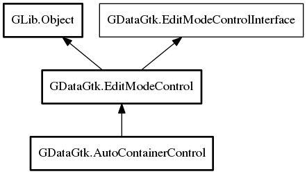

AutoContainerControl
Object Hierarchy:

Description:
public class AutoContainerControl :
EditModeControl
Controls defaults over how widgets are displayed in auto container
Since:
0.1
Content:
Properties:
- public bool show_labels { set; get; }
Specifies if auto widget labels are visible or not
- public bool show_tools { set; get; }
Specifies if auto widget tools are visible or not
- public Align label_halignment { set; get; }
Specifies label horizontal alignment
- public Align label_valignment { set; get; }
Specifies label vertical alignment
- public double label_opacity { set; get; }
Specifies opacity of label widgets
- public bool labels_use_markup { set; get; }
Specifies if labels use markup or not
- public string label_markup_format { set; get; }
Encasing format for label markup. Use %s to specify label text
position. This is meant to provide uniform look over all labels
- public bool show_tooltips { set; get; }
Specifies is tooltips should be assigned if available
- public bool tooltip_use_markup { set; get; }
Specifies if tooltips use markup or not
- public Orientation orientation { set; get; }
Specifies orientation between label and value editor
Creation methods:
Inherited Members:
All known members inherited from class GDataGtk.EditModeControl
All known members inherited from class GLib.Object
- @new
- new_valist
- newv
- add_toggle_ref
- add_weak_pointer
- bind_property
- connect
- constructed
- disconnect
- dispose
- dup_data
- dup_qdata
- freeze_notify
- @get
- get_class
- get_data
- get_property
- get_qdata
- get_type
- notify_property
- @ref
- ref_sink
- replace_data
- replace_qdata
- remove_toggle_ref
- remove_weak_pointer
- @set
- set_data
- set_data_full
- set_property
- set_qdata
- set_qdata_full
- steal_data
- steal_qdata
- thaw_notify
- unref
- weak_ref
- weak_unref
- notify
- ref_count
All known members inherited from interface
GDataGtk.EditModeControlInterface